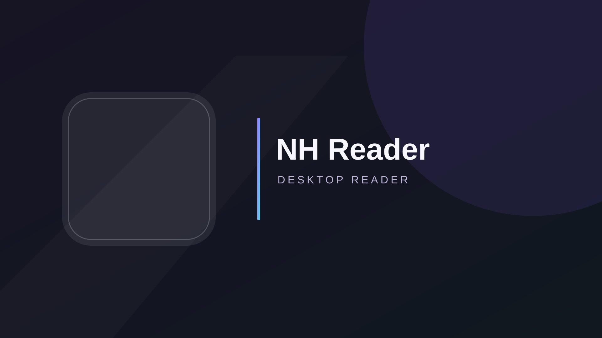
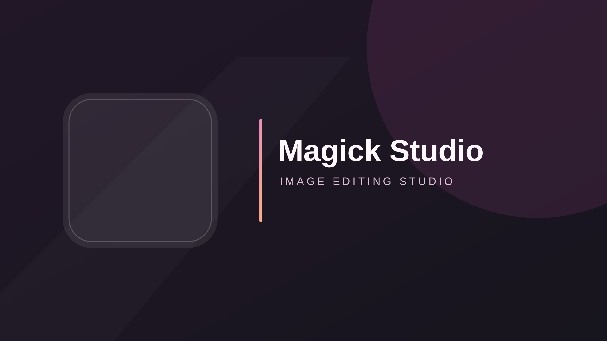

About HELIX Origin
HELIX Origin is a home for open-source development and customization. Explore our applications, tools, and themes below, or visit the organization on GitHub to follow their development.
Projects
-

Hentai Senpai Multi-DE Theme
A dark GTK theme based on Orchis with Nord colors.
Project page ↗ Source on GitHub ↗ -

NH Reader
A cross-platform desktop reader with search, filters, and a global blacklist.
Project page ↗ Source on GitHub ↗ -
HELIX Discord Bot
A self-hosted bot for feeds, live alerts, administration, and a web dashboard.
Project page ↗ Source on GitHub ↗ -

Magick Studio
A cross-platform graphical interface for ImageMagick, built with Python.
Project page ↗ Source on GitHub ↗
Project Pages
Each project page lives at helix-origin.github.io/repository-name/ once GitHub Pages is enabled in that repository. Until then, use the source links above to explore the projects.